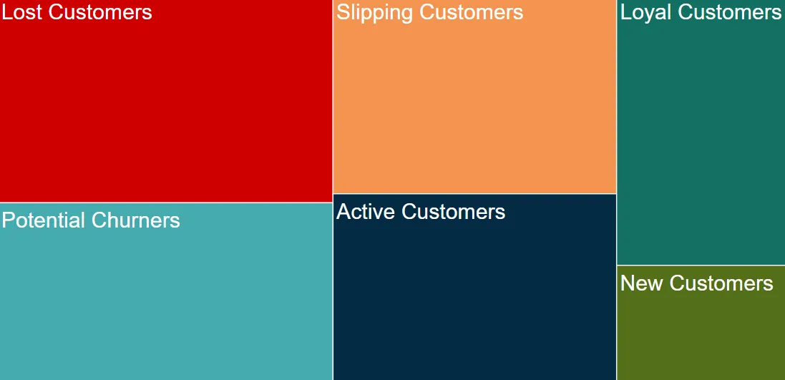

In this project, my main responsibility was to develop key performance indicators (KPIs) to monitor the company's revenues, sales, profits, income, and returns.
.png)
.jpeg)
In this project, I conducted a thorough data exploration of COVID-19 datasets. The aim was to gain valuable insights, identify meaningful patterns, and comprehend the underlying trends and characteristics of the 2020 pandemic.

In this project, I performed RFM analysis by utilizing MySQL to divide customers into segments based on their purchasing behavior.

The main objective of this project was to develop an executive dashboard showcasing airport sales and flight delays. Additionally, the project aimed to detect patterns between airport sales and flight delays concerning specific timeframes and months.

Website analysis has always intrigued me, leading me to conduct an in-depth analysis of a specific website. My primary objective was to gain valuable insights into user behavior, understand the website's performance, and evaluate its overall effectiveness.